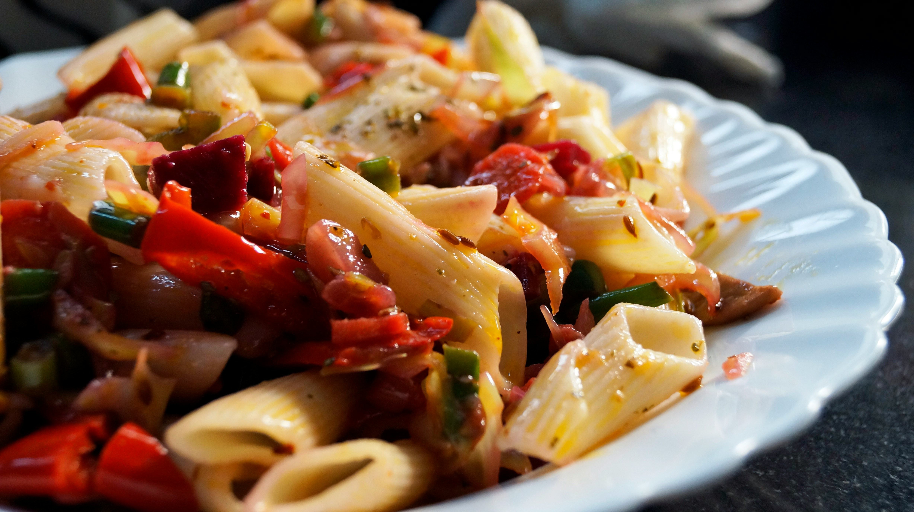

Artichoke Pasta with Tomatoes and Pesto

Description
This can be a main course for 1 night or a side course for a few nights
Ingredients
- 6-7 oz marinated artichokes, drained
- 3 T olive oil
- 1 large onion, chopped
- 28oz can petite diced tomatoes
- 1/2 c pesto
- 12 oz penne pasta, cooked
- 1/3 c grated parmesan cheese
- 3 cloves garlic, chopped
Steps
- Heat olive oil, saute onions and garlic until tender
- Add tomatoes and juice, then artichokes
- Simmer ~8 minutes nor until sauce thickens
- Add pesto, simmer for 1 minute then mix in pasta and cheese
- Season with salt and pepper
Home